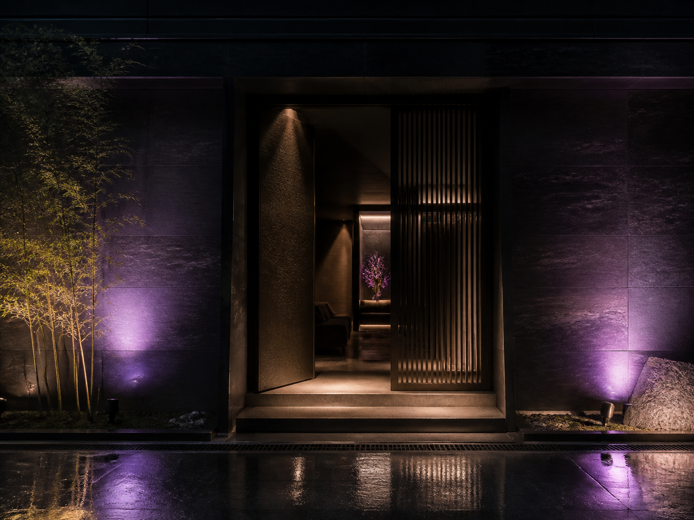
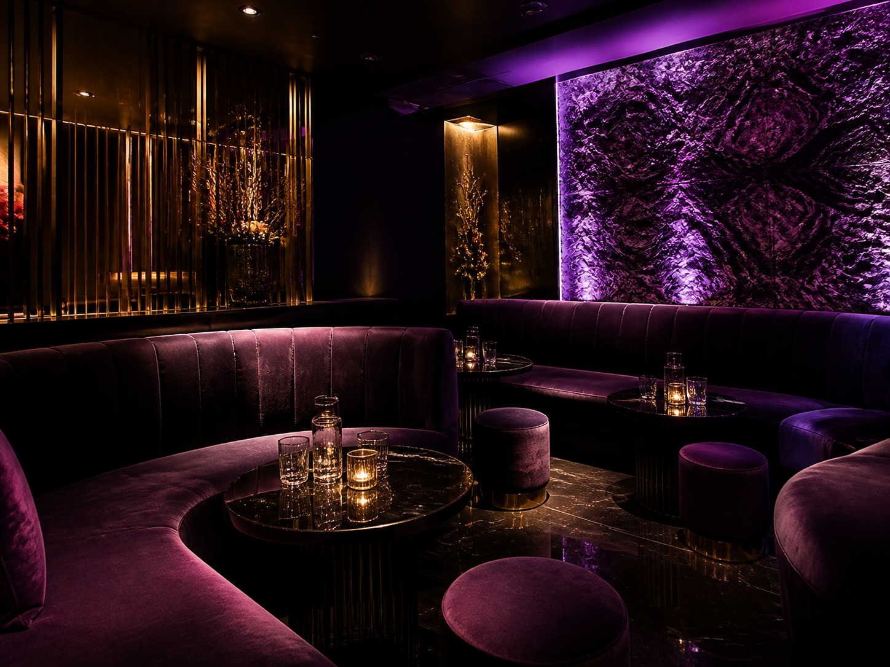

Night Lounge4.8 ★★★★★ (328)ガールズバー · 営業中 · 徒歩2分
Googleマップからの新規客、
ナイトワーク専門
MEO×AIO対策サービス
GoogleマップとAI検索の両面から、来店につながる導線を最適化します。
診断だけでもOK。無理な営業は行いません。

Night Lounge4.8 ★★★★★ (328)ガールズバー · 営業中 · 徒歩2分
AI街 ガールズバー4.2 ★★★★☆ (47)ガールズバー · 渋谷駅5分

Night Lounge4.8 ★★★★★ (328)ガールズバー · 営業中 · 徒歩2分
「近くのキャバクラ」
「エリア名＋ラウンジ」
来店直前の 意思決定は、Googleマップで起きています。
あなたのお店4.8 ★★★★★口コミ 328件
「初めてでも安心して楽しめた！「雰囲気はよいが
もう少し情報がほしい」
「料金が不明瞭だった」
口コミが少ない・評価が低いだけで、候補から外されてしまいます。
当社調べでは、
未対策の店舗が80％以上を占め、
Googleマップ対策を十分に行っていません。
Googleマップ
対策未実施
Night Lounge4.8 ★★★★★
検索から来店までの導線を、まとめて最適化します。
Nightwork specialized
お客様の心理と行動に沿った最適化で、来店につなげます。
店舗ごとの課題を見極め、世界観を損なわない運用を支援します。
今ならお得な
キャンペーン実施中！
システム利用プラン
自社で運用したい店舗向け通常価格運用おまかせプラン
デザイン・運用までまるっとお任せ通常価格初期費用
最低契約期間は設けていません。施策の検証と改善のため、3ヶ月以上の継続をおすすめしています。
キャバクラ、クラブ、ラウンジ、ガールズバー、コンカフェ、スナックなど、ナイトワーク業態の店舗を対象としています。
検索順位や集客成果を保証するものではありません。現状と競合を踏まえ、改善に必要な施策をご提案します。
Googleマップ上の店舗情報、口コミ、競合との見え方などを確認し、優先して取り組むべき課題をご案内します。
必要情報や素材のご共有をお願いする場合があります。運用おまかせプランでは、日々の負担を抑えながら進められます。
Free store diagnosis
まずは無料で店舗診断を申し込んで、今の集客導線を確認してみませんか？
無料店舗診断レポート